Introduction
For our first Captain guide of the To Boldly Go era, we have another captain from Star Trek Discovery, Captain Philippa Georgiou portrayed by Oscar-winner Michelle Yeoh (they really emphasized that Oscar when promoting the Section 31 movie, didn't they?). I highly recommend watching the Discovery two-part pilot episode to understand the thematic tie-ins for her deck. Georgiou is relatively straightforward at a complexity- rating of 2, but she has some heavy-hitting developments and some interesting variations of crew we previously saw in the Burnham deck. I like that the central conflict in the deck is that she’s a captain forced into military action, but her focus scoring rewards her for advancing on Exploration. That mechanical dichotomy will be important to understand to run her deck effectively.
↑ back to topMissions
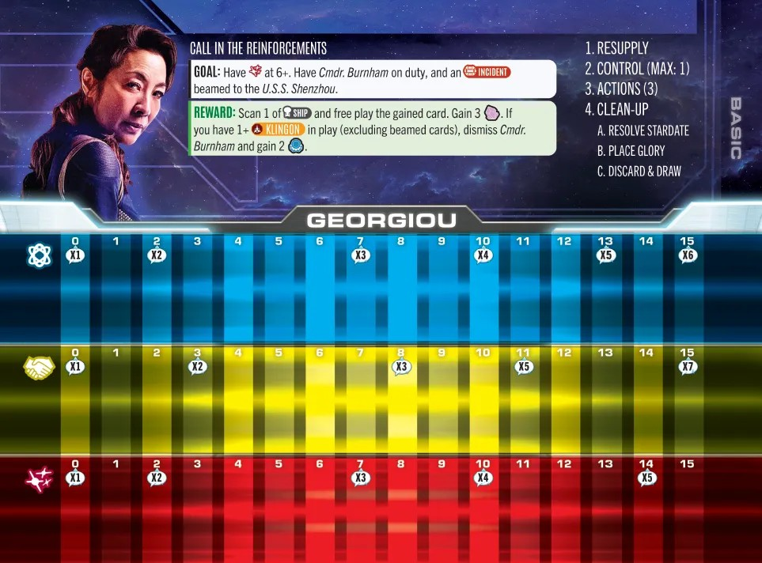
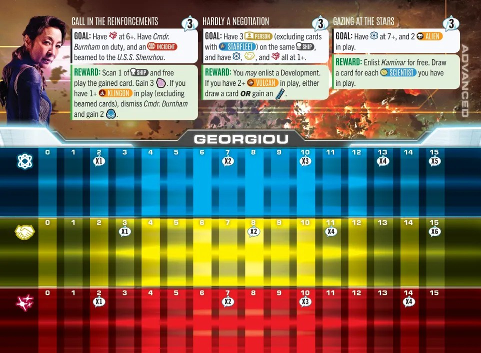
Georgiou's player board has basic side track multipliers that max out at 6x for Research, 7x for Influence, and 5x for military. As always the advanced side’s thresholds are one less. Her base side mission is Call in the Reinforcements, which requires six or more Military, Commander Burnham on duty, and an Incident beamed to the U.S.S. Shenzhou, her deployed starting ship. Her reward for completion allows you to scan the top card of the ship deck and free play the gained card, gain three Dilithium, and if you have a non-beamed Klingon, you can dismiss Commander Burnham and gain two Glory. This mission is incredibly easy to pull off, so long as you get Commander Burnham out of your Reserves relatively quickly. Beaming an incident shouldn’t be a problem, nor should getting your Military track above six. The reward is beneficial and thematic (the opener of Discovery episode two starts with a massive space battle against the Klingons) but it is worth holding off on until you get that Klingon in play. Since they can’t be beamed, you either need to gain a ship with Klingon as part of the reward, or you need to have another Klingon card in play (like Augmentation Plague which is ongoing) or have a Klingon Person in your staging area, or Duty Officer in addition to Burnham (See the Sarek Development below, which would help with having multiple duty officers).
Georgiou’s Advanced side gives you three points for Call in the Reinforcements. Her second mission is Hardly a Negotiation, which requires three non-Starfleet Person cards on the same ship, and at least one of each skill track. The second part of that isn’t hard with Utilize and other random abilities, but you’ll need to intentionally gain person cards to get this one done. It rewards you with three points, a Development, and if you have two or more Vulcans in play you can draw a card or gain an action token. The enlist reward is nice enough, but again there’s a situational benefit that only triggers with at least two Vulcans. Fortunately, you have two Vulcan traits in your deck, and there are another four in the TBG common markets (Lirpa, Talok, Vice Admiral Pasalk, and D’Kyr Crusier) and one in an encounter (Stone of Gol). Georgiou’s third mission is Gazing at the Stars, which requires seven Research and two Alien traits in play. That may take a little bit of luck to get the Alien traits (eight total, with two Locations and one Encounter), but if you can get them out you gain three points and can enlist the development location Kaminar for free, and draw a card for each Scientist trait in play. This gives you heavy incentive not to Enlist Kaminar early and to make sure you grab Scientist cards early on. You’ve also got that Research threshold for this mission, which can be tough if you’ve been overly focusing on Military.
↑ back to topCaptain Card & Starting Components
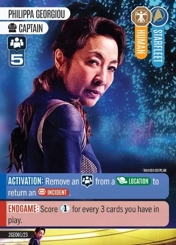
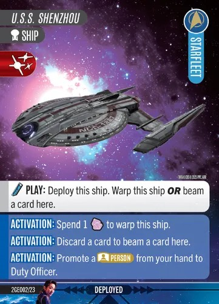
Georgiou has five away teams, the Human and Starfleet traits, and endgame scoring where she scores one point for every three cards you have in play at the end of the game. This would include Georgiou herself as your captain card is indeed a card in play. She has an Activation that allows you to remove an away team from a location to return an Incident, so don’t be afraid to take Incidents as needed early on so long as you’re keeping track for purposes of The Burn. You start with the U.S.S. Shenzhou deployed. It has one Military in addition to the Starfleet trait. It has a pretty standard set of abilities. When deployed as a play action, you may either warp it or beam a card there. It has the standard Activations for Warp, Beam, and Promote, which, for those of you who haven’t read my previous guides (welcome to the game, some of you), are warping a ship at the cost of one Dilithium, discarding a card to beam a card to the U.S.S. Shenzhou, or promoting a Person card from your hand to Duty Officer.
↑ back to topGeorgiou’s Available Cards
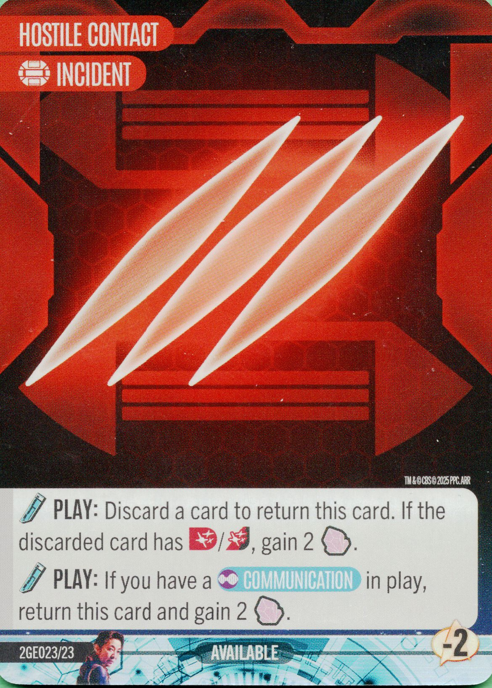
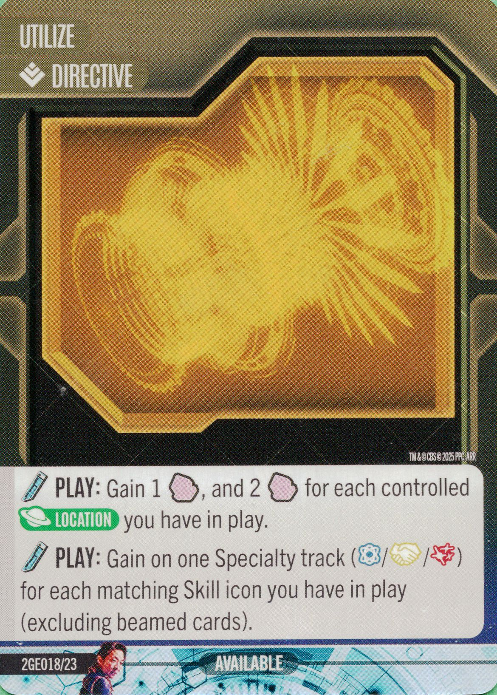
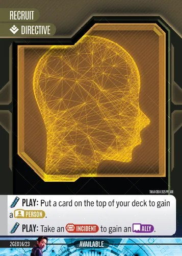
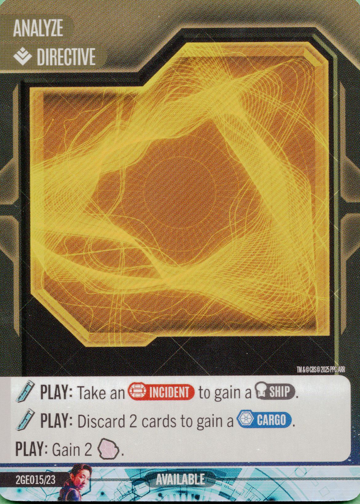
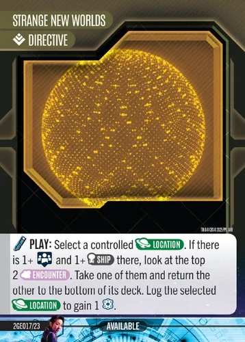
Georgiou has 10 available cards that can make up her starting hand. There are three Person cards, four Directives, a Location, a Ship, and an Incident. About half of her Available cards are familiar to us, including Hostile Contact (Incident), Utilize (Directive), Recruit (Directive), Analyze (Directive), and Strange New Worlds (Directive). Here are the others:
↑ back to topDanby Connor (Person)
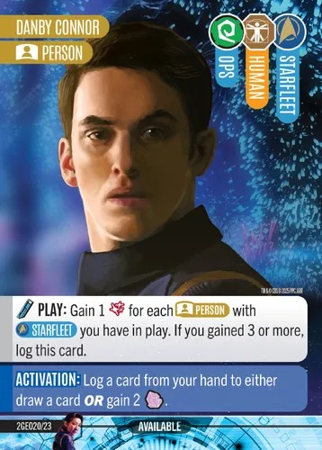
The Ops officer for the U.S.S. Shenzhou, he was present at the battle of the Binary Stars. He suffered a concussion, went to the brig instead of sickbay, and was blown out into space when the ship suffered a hull breach.
Poor Danby existed, then ceased to exist, for the plot. He has the Ops, Human, and Starfleet traits, reflecting his role as the Ops officer on the Shenzhou. His play action raises your Military for each person with Starfleet in play, but he gets logged if you gain three or more. His Activation allows you to log a card from your hand to draw a card or gain two Dilithium. I’m going to suggest that you have two options with him. You can try to get Detmer and Gant out into play, then use Connor, triggering his self-log. Otherwise, he makes a great duty officer perfect for thinning out your deck and regaining cards as you go.
↑ back to topLt. Detmer (Person)
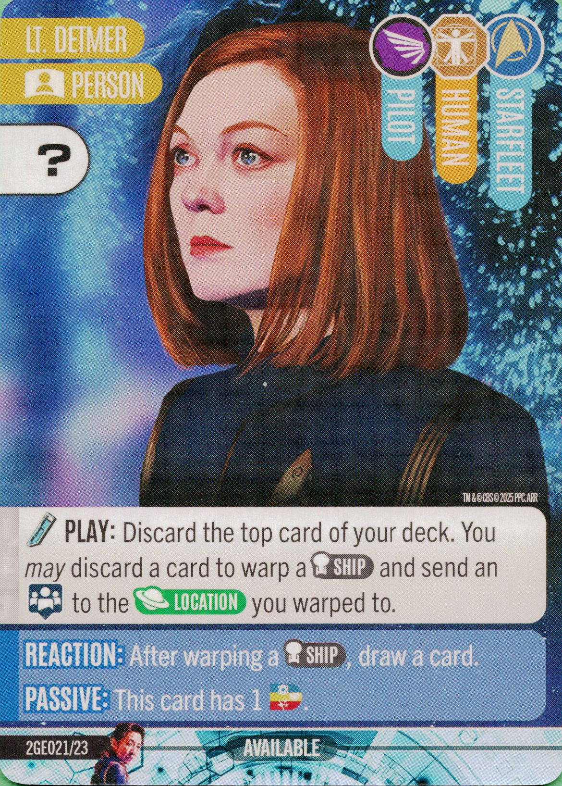
Before the Klingon war and her reassignment to the U.S.S. Discovery, Keyla Detmer was the helmsman for the Shenzhou under Captain Georgiou. She saw the battle through and continued to fight in the Federation-Klingon War.
Detmer lacks her implants she gained during the war, and also lacks a Synthetic tag, having only Pilot, Human, and Starfleet. Her Passive ability only awards her one wild skill now instead of the two she got in Burnham’s deck, but her play action text is identical, allowing her to discard a card to warp a ship and send an Away Team to the warped location. She also gains a new Reaction text, where you now gain a card after warping a ship. I appreciate that addition since the lack of the passive wild skill is objectively worse than her counterpart in Burnham’s deck, and the reaction certainly helps. However, I think she’s far too valuable as a method of placing Away Teams to sit in the Duty Officer position for too long. I prefer to try to continuously use her for Away Teams until a better option in the market comes along.
↑ back to topKamran Gant (Person)
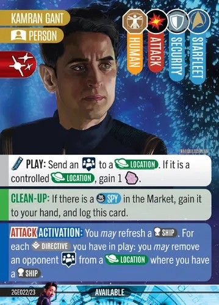
The chief tactical officer of the U.S.S. Shenzhou, Gant survives the battle of the Binary Stars to join Section 31, an organization that is prominently featured in season 2 of Discovery. Unfortunately, he only truly appears on-screen in the pilot, as he has been secretly replaced by a nefarious force in season 2.
Gant has a military skill, and the Attack, Human, Starfleet, and Security traits. Gant’s play action lets you send an Away Team to a location, and if it’s a controlled location you gain a Dilithium. He has a Clean-up operation that requires you to gain a Spy card from the market and log him, which you can’t avoid. His attack Activation lets you refresh a ship, and then for each Directive you have in play you may remove an opponent Away Team from a Location where you have a ship. I like this ability quite a bit, especially if you want to make him your Duty Officer so as to refresh the Shenzhou in the first turn, either to warp or beam a card.
↑ back to topVulcan Science Academy (Location)
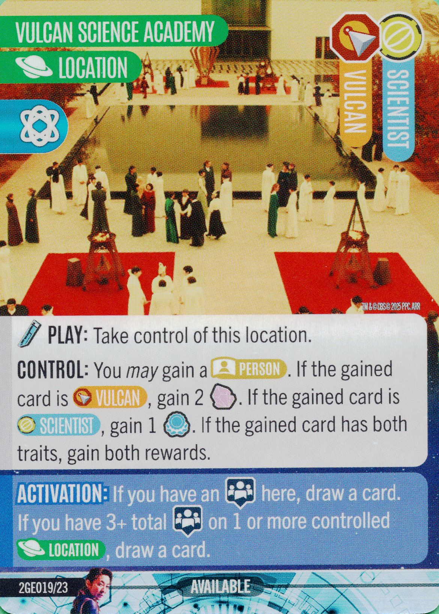
Appearing mostly in flashbacks, and a bit more prominently in Michael Burnham’s story, the Vulcan Science Academy gets a Research skill along with the Vulcan and Scientist traits. After taking control, you gain a person, gaining two Dilithium if the card is Vulcan and one glory if it’s a Scientist. If it’s both you gain both, but I do not believe there’s a Person card in the market with both traits currently (odd, since Vulcan seems famous for their scientists). The Vulcan Science Academy has the common activation allowing you to draw cards based on away teams sent here or to other controlled locations.
↑ back to topClass C Shuttlecraft (Ship)
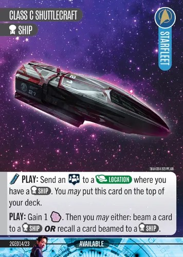
This card is completely identical to Picard’s Type 7 Shuttlecraft, with the play action that allows you to send an Away Team to a location with a ship and put it on top of your deck. Alternatively, you can use it to gain a Dilithium and then beam or recall a card beamed to a Ship. I’m not the biggest fan of repeated uses of this card on top of the deck, as it does cost the action token and returns a card to the top of your deck, thus slowing a reshuffle in some circumstances. But I really like the ability to swap out beamed cards, and it certainly has a place in a lot of strategies.
↑ back to topGeorgiou Starting Hand Strategies
Whenever I’m analyzing a starting hand strategy in a vacuum, I always start by looking for card draw, because that will automatically increase your hand size, thus giving you more options and flexibility for an ideal opening turn (see my Sela strategy guide for a good example). Georgiou has very few card draw options. There’s the Vulcan Science Academy, Connor, and Detmer, but all three cards have to be in play (controlled or as duty officer) to have the potential for card draw, and once you get that card draw, you won’t have many actions left. Take, for example, the Vulcan Science Academy. If you can get it out, and use another card to send an Away team there, you can draw one more card, but that’s going to cost you two actions on your first turn. Alternatively, you can get a card draw from promoting Connor or Detmer, but it’s only one card. Connor comes with that added downside of logging a starting card that you might really need, but if you’re willing to commit to logging heavily early on, this can be a strong strategy in and of itself. Detmer’s logging requires you to warp a ship, so if you promote her you’ll need a way to refresh the U.S.S. Shenzhou, otherwise you’re not getting to use that card draw anyway.
Regardless of whether you’re looking for card draw, getting the Vulcan Science Academy out if it’s part of your starting hand is a must, simply to help thin your deck. From there I usually look to see which person cards I have, then I build my strategy around using them. If I have Detmer and Gant (along with Utilize), I might consider promoting Detmer and playing Gant to Vulcan Science Academy, so I can get my card draw and gain two Military. Alternatively, I could use Connor and either Detmer or Gant to the same end since he gains Military for every Starfleet Person in play. If I managed to get a Starfleet Person when I controlled the Vulcan Science Academy, I might consider holding off on using Connor to try to get 3-5 Military at once, though you can always use him a few times with only one other Starfleet Person in play to avoid his self-log. As for Detmer, I think that her ability to draw a card when warping a ship will come in handy a lot, but it probably won’t in your first round without a ship to refresh. She’s usually best used for sending that first away team.
Let's assume that you don’t have any of these three cards in your hand, and you’re stuck with five of the remaining seven. Analyze and Recruit are incredibly specific to the market and your willingness to take on Incidents (which as I stated, is usually okay for Georgiou). Utilize and Strange New Worlds are probably not the best choice, though both have their place. That leaves Class C Shuttlecraft, Kamran Gant, and the Hostile Contact Incident. Let's start with Gant, since I think he’s probably best used as a Duty officer if you have no other choice of duty officer. That will vary a bit, as you could use him with Class C Shuttle craft and the U.S.S. Shenzhou to potentially control a location on turn two. Without any weapons or countermeasures, that could backfire. I think that the multiplayer element of this matters greatly too. If you’re going first in a multiplayer game and only have Gant as a Person in your hand, I think it’s nearly a requirement to promote him to duty officer so that you can remove your opponent’s away teams on the following turn. You won’t be able to use it on your first turn to remove away teams, but you can at least set up that remove since Gant lets you refresh your ship, and you’ll still be able to warp the U.S.S. Shenzhou, something you can’t do with Connor as a duty officer.
Returning to the thin-deck versus thick-deck strategy with Georgiou, you have to remember that she’s got tools for thinning your deck later on. Her Thruster Pack Development takes the pressure off of logging person cards, and Sarak will let you have up to three duty officers. She’s also only got four Reserve cards, so just like Picard, she’ll be getting into the developments quickly without worrying about committing to a heavy-logging strategy. But if you’re concerned, you can still get Connor promoted to duty officer and start logging cards. I personally have a lot of trouble with logging Directives like Analyze and Recruit but if you are willing to risk not having one of them, you can thin things out fast. As a side note, I’d log Recruit before Analyze because Georgiou needs ships and doesn’t have many other ways to get them. Back to logging, I’d also consider logging Gant or Class C Shuttlecraft early on. If you are going to go that route, just remember that you don’t have that many Developments that let you scan for specific cards, and in your Reserves you only really have Burnham, and she has a Research requirement to do so. But please don’t forget that beaming cards to ships will mean (1) more cards in play for Georgiou’s endgame scoring and (2) nearly the same effect of a thinned deck without losing abilities. And don’t forget to try to beam Hostile Contact regardless of Georgiou’s Call In The Reinforcements mission.
Should you Strange New Worlds on turn one if given the opportunity? To pull this off, you’ll need Vulcan Science Academy, Lt. Detmer, and SNW in hand at the start of the game. You’ll play the Location, use Detmer to send the U.S.S. Shenzhou an away team there, draw a card via the Academy activation, and then use SNW on the Vulcan Science Academy. You’re obviously gaining a chance at a really good encounter. The costs are a Research Skill Icon, card draw, and the Vulcan and Science traits from the Vulcan Science Academy. This means you’re immediately endangering your Gazing At The Stars mission and Nerfing your Hardly A Negotiation rewards on your advanced side of the board, not to mention you’re giving up consistent card draw and a way to gain Dilithium. I would say this is a stronger play on Georgiou’s basic side, but it’s still a huge risk early on. But if you have to log locations for Strange New Worlds at some point, taking that risk is valid and must be considered.
↑ back to topGeorgiou’s Reserve Cards
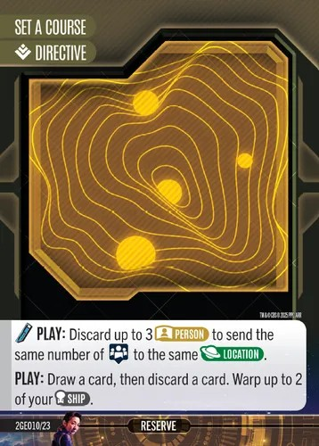
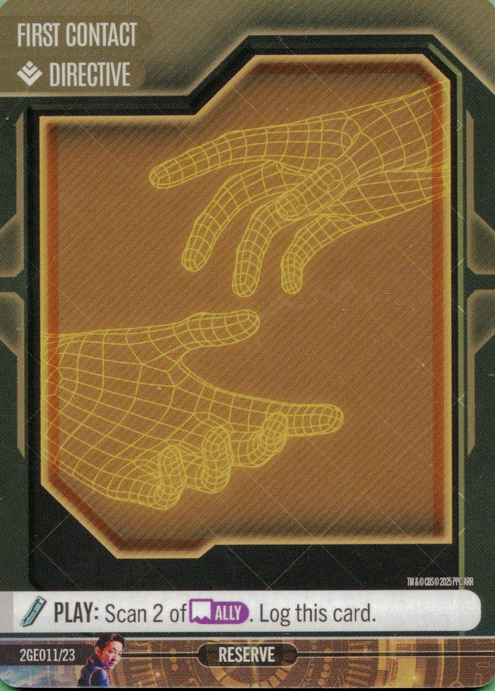
Georgiou has four reserve cards consisting of two Directives and two Person cards. The Directives are familiar to us, as she has Set A Course (also found in Picard and SIsko’s Available cards) and First Contact (also in Picard’s Reserves). I like the flexibility you get from Set a Course, and its use in helping to quickly control neutral locations, and First Contact is a great one-off Directive for getting a choice of Ally cards then getting it logged out of your deck. Additionally, here are her two (obvious) Person cards:
↑ back to topCmdr. Burnham (Person)
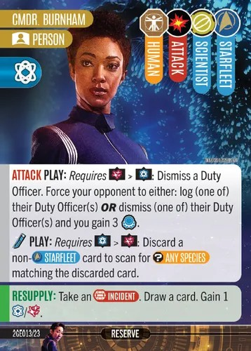
The main character of Star Trek Discovery, Michael Burnham starts the series as the first officer on board the Shenzhou. She then makes some… questionable decisions. Prior to the series, she has many years of loyalty and friendship with Captain Georgiou.
This is a really great card to show up out of your Reserve deck first, because without it you can’t complete your first mission. Her traits are Human, Scientist, Starfleet, and Attack, with a Research skill. Depending on which you have more of, Research or Military, you are limited to one Play action or another. If you have more military, you get a free play action requiring you to dismiss a duty officer, then force your opponent to log a duty officer or dismiss and you gain three Glory. That’s a great way to push the endgame, and it’s hardly a cost if you were going to replace your duty officer anyway. Alternatively, if you have more Research than Military, you can discard a non-Starfleet card to scan for the same species as the card you discarded. While scanning is a benefit, not a cost, you’d still need to discard a card with a trait on it to get anything out of this card. Cmdr. Burnham also has a resupply that forces you to take an Incident, draw a card, and gain a Research or Military, which will help you control which of her other abilities you will be able to use. Thematically, this is right on target, as Michael gets results, but seems to constantly be going rogue to do so.
↑ back to topLt. Saru (Person)
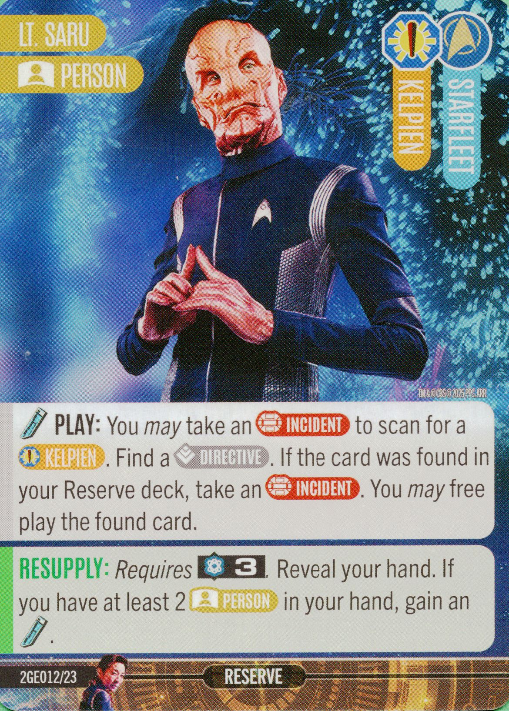
Saru and Georgiou share a special bond, as she found him on his homeworld Kaminar and offered him a chance to escape a meaningless life as prey for the Ba’ul. He signaled her using an interstellar communication device, and she offered him a chance to join Starfleet. He left his family behind, choosing to learn many languages and skills to make himself useful to Starfleet, resolving to help those in need as he had been helped.
The first Kelpien in Starfleet, Lt. Saru has very similar text to his Captain Burnham deck counterpart. He has the Kelpien and Starfleet traits. His Play action lets you take an Incident to scan for a Kelpien (there are still only two in the deck), find a Directive (taking an Incident if it was found in your Reserve deck) and free playing said Directive. This is very similar to Captain Burnham’s Saru, only since she had no Reserve deck Directives, he has an additional Incident restriction. His Resupply is also mostly the same, where if you have two Person cards in your hand you get an additional action token, but the threshold is now three Research instead of two Influence. There was talk, and I think rightfully so, that this is one of the most useful cards in the game, and now two decks have similar versions of him.
↑ back to topGeorgiou’s Reserve Deck Strategy
When approaching the Reserve Deck, you never know what you’re going to get. That means you could have a long wait to get Georgiou’s first mission with Burnham done, or it could be easy to set up right away. Either way, getting Saru or Burnham early is great because you can start to push for more dynamic strategies (including using Saru to clear out your Reserves even more). The ideal order for me would be Saru, Set a Course, Burnham (using Saru to fish First Contact out of the Reserves). You could easily be through your reserves by turn four if you’re smart in how you are beaming and logging cards.
↑ back to topGeorgiou’s Development Cards
Georgiou has seven Development cards, including two Persons, two Cargo, two locations, and one Encounter.
↑ back to topAdmiral Anderson (Person) (Dev Cost 4 Dilithium)
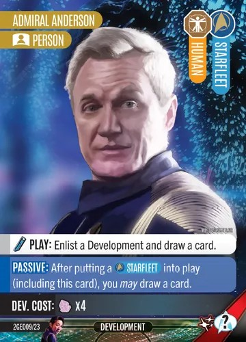
The Admiral shows up briefly in the second episode of Discovery to try to negotiate a peace between the Klingons and Federation. He does not do a great job, mostly due to a fundamental misunderstanding of how the Klingons view overtures of peace.
Anderson has the Human and Starfleet traits, and a Play action allowing you to Enlist a Development and draw a card. As a reminder, that Development can be gained to the top of your deck, meaning you would get to use it on the same turn. Anything that can speed up your card draw and reduce the number of times you need to cycle your deck is useful, but he also has an amazing Passive which lets you draw a card anytime you put a Starfleet trait into play. That’s not a Reaction, and with the sheer number of Starfleet cards in the market and in this deck, that’s Deanna Troi levels of options. He scores for Military Focus, which is probably going to be high for Georgiou.
↑ back to topAmbassador Sarek (Person) (Dev Cost 1 Dilithium and 1 Latinum)
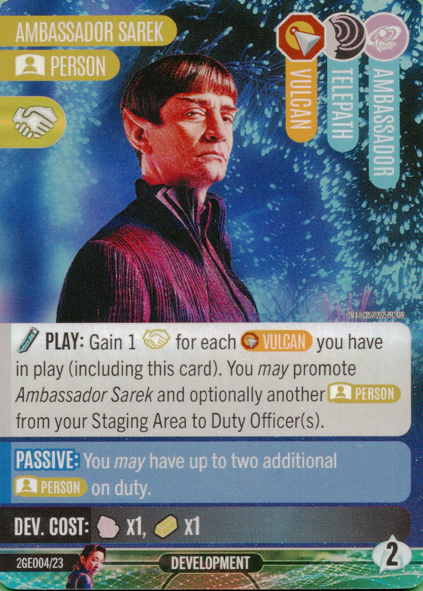
James Frain takes over from Mark Lenard (and technically Ben Cross in Star Trek 2009) in the role of Sarek. I first saw him act in the TV show 24 in a much more emotional role, so this was quite the shift playing the stoic, logical father of Spock and, as newly revealed, the adoptive father Michael Burnham (the absence of anyone mentioning her in 30 years of Star Trek is dealt with in the season two finale).
Sarek has an Influence skill along with the Vulcan, Telepath, and Ambassador traits. His play action gains you one Influence for every Vulcan in play, of which there are two in the deck (counting Sarek). You can then promote him and another Person from your Staging Area to Duty Officer, and his Passive allows for up to three total. I have typically played him once, then kept him as a Duty officer the rest of the game Georgiou scores for cards in play, so this is helpful, if not busy on the table. Ambassador Sarek scores two points. We'll compare this card to elderly Sarek (the Mark Lenard version) when we see that card in Kirk’s deck.
↑ back to topThruster Pack (Cargo) (Dev Cost 2 Dilithium)
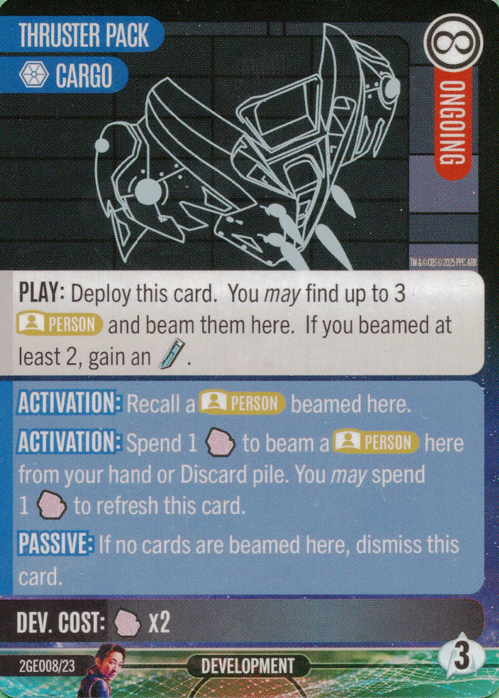
Used by Michael Burnham in the opener, this was a logical piece of cargo with some great thematic ties and interesting mechanical implications for Georgiou’s deck. It’s ongoing, and deploys as a free action. You can find up to three Person cards and beam them to this card, and if you beam at least two you get an action token. That’s pretty great for deck thinning. There’s two Activations, either to recall a Person beamed there or to spend a Dilithium to beam a person from your hand or discard pile, and then you can spend another Dilithium to refresh, meaning you can do it again. If you use Glory in lieu of Dilithium, you’d have to use two instead of one, since they’re separate costs. There’s also a passive that dismisses Thruster Pack if no one is beamed there, which is often quite fine since you want to get that extra action token again on occasion. While this isn’t the full strategy guide, I’ll go ahead and note that you can find Michael Burnham and Saru from your Reserves using this, so if something like Ancient Relay Station comes up in the starting locations, it can be worth getting this development first, especially with its cheap Development cost. It scores three points. Interestingly, there is another cargo in this box, that's also about making a person fly, and naturally these two cards work very similarly: but more on Kirk's Levitation Boots when we get to his deck.
↑ back to topAn Old Telescope (Cargo) (Dev Cost 3 Latinum)
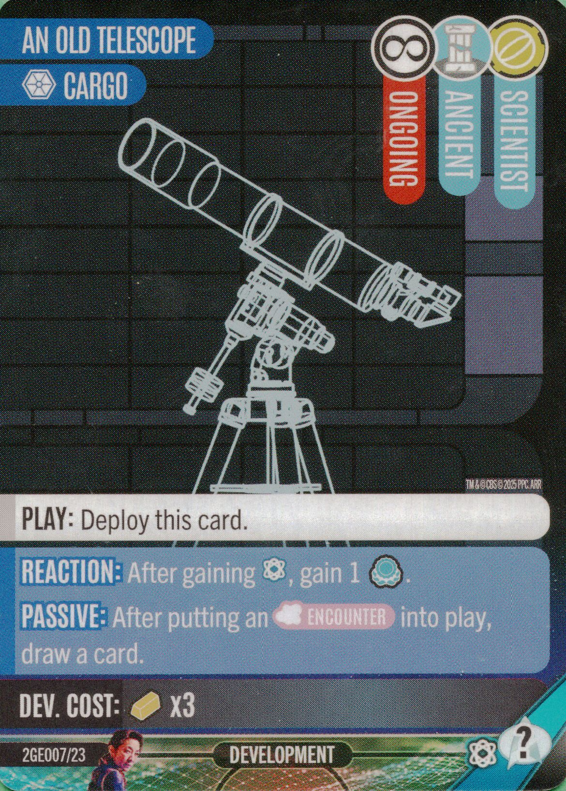
Georgiou’s heirloom gets used in the first few minutes, then brought up again later on, where it is given to Burnham who gives it to Saru. There’s plenty of plot holes in every Star Trek, but I have to ask, did somebody intentionally bring this along when they abandoned the U.S.S. Shenzhou to the Klingons? Because the Klingons were still on the ship a few episodes later. I digress.
This has the Ancient, Scientist, and Ongoing traits, and is deployed as a free action. It has a reaction that gains you a Glory when you gain a Research, and a Passive that gives you a card draw when an Encounter is put in play. There’s not much reason (Besides lack of Latinum) not to get this out as soon as possible to start benefiting from those table operations. It scores for a Research Focus.
↑ back to topBinary Stars Comms Relay (Location) (Dev Cost 3 Dilithium, and dismiss a Duty Officer)
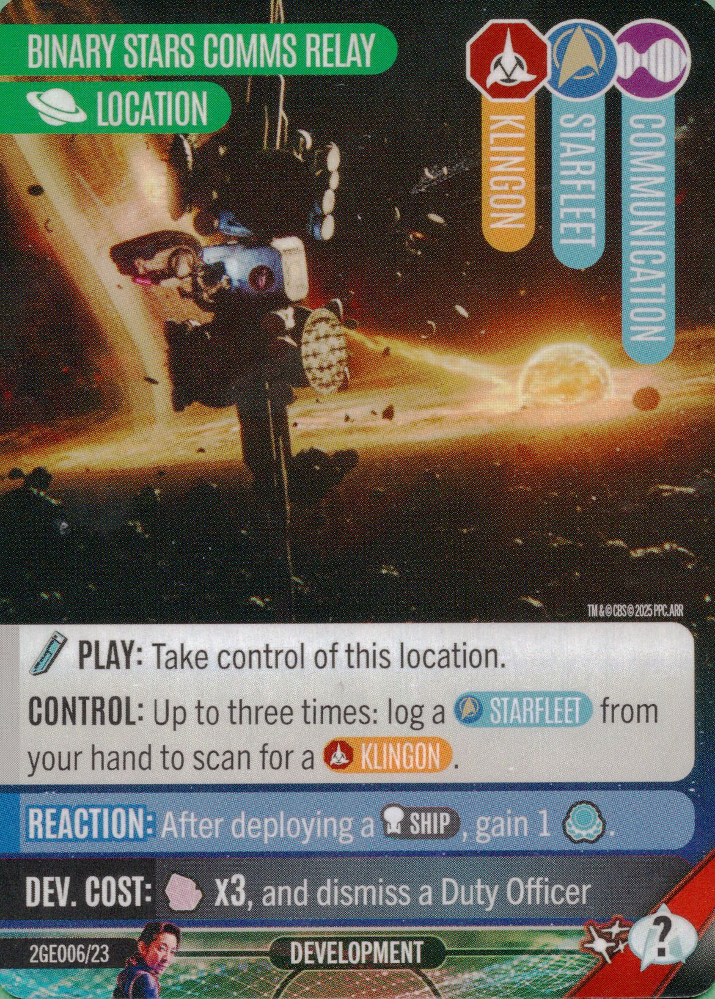
The setting of the Discovery two-part opener and a massive Starfleet-Klingon battle, this location has the Klingon, Starfleet, and Communication traits. After playing and taking control, you can log a Starfleet card from your hand to scan for Klingon, up to three times. Then, as a Reaction, you can gain a Glory when you deploy a Ship. There’s a risk to taking this early, because you might really want to keep your Starfleet cards around. That being said, you’re replacing them with up to three Klingons, and you now have a Glory incentive to keep deploying ships. It scores for Military Focus.
↑ back to topKaminar (Location) (Dev Cost 3 Dilithium)
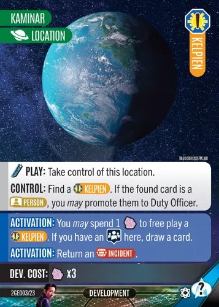
The home of the Kelpiens and the Ba'ul, Kaminar gets the Kelpien trait. When you control Kaminar, you can find a Kelpien, and promote to Duty Officer if a Person. Its Activation allows you to free play a Kelpien at the cost of Dilithium, drawing a card if an Away Team is there. Alternatively, you can return an incident as an Activation. This card is fantastic in relation to Saru, but consider that you can enlist it for free with Georgiou’s Gazing at the Stars mission. It scores for Research Focus.
↑ back to topRed Angel (Encounter) (Dev Cost 3 Dilithium, and take an Incident)
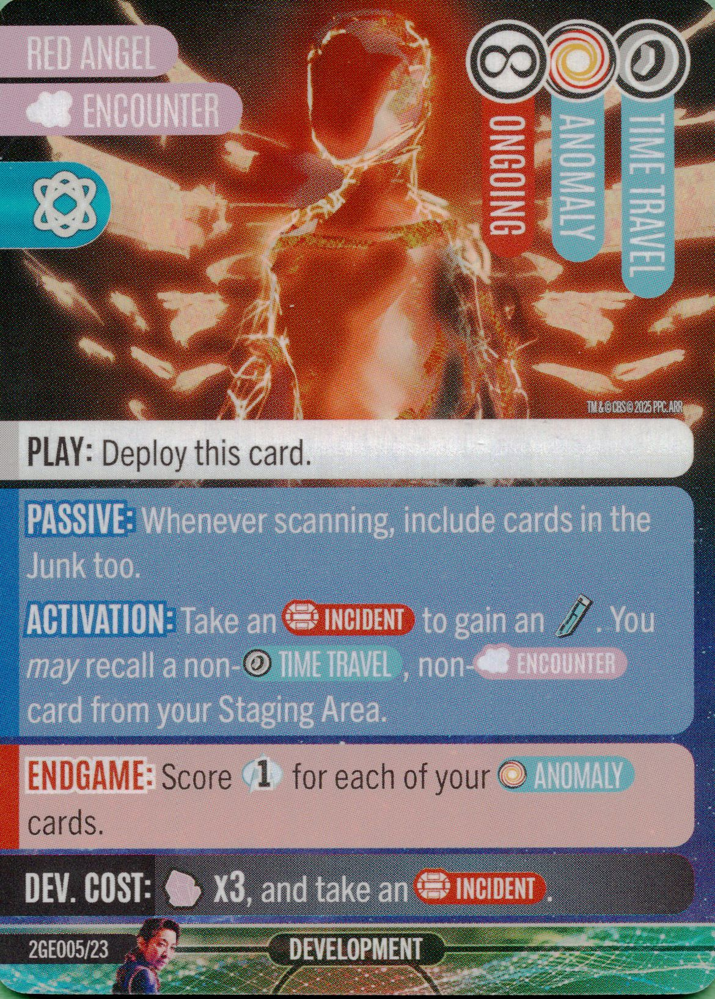
Likely the least thematic card in the Georgiou deck, it’s not entirely disconnected from her character who did incidentally interact with the Red Angel suit. However, it is far more the focal point of Discovery Season two and Michael Burnham, but we're probably not getting a second Burnham deck, so it might as well go here.
This encounter gets the Ongoing, Anomaly, and Time Travel traits, along with a Research skill. It deploys for free, and allows you to include cards in the junk when scanning any of the four decks. The Activation lets you take an Incident to gain an Action token, and you may recall a non-Time Travel, non-Encounter from your staging area. Almost like a mini-Guardian of Forever, if you think about it. Anything that allows for a recall is great, but you will gain the Incident which will need to be dealt with. The Red Angel also has Endgame scoring giving you a point for each Anomaly trait Georgiou owns.
↑ back to topGeorgiou Development Strategy
First, let’s talk about what not to get: Kaminar. At least, that’s my recommendation if you’re playing on the Advanced board, because you’ll get to enlist it for free. While it’s a great card and a cool way to repeatedly free play Saru, there’s not usually a rush to get it out unless you’re hurting on Incidents and need another way (besides Georgiou) to return them.
The biggest problem with Georgiou’s other Developments is that, well, they’re all pretty damn good. The only obvious distinguishing factor (besides your circumstances) is the enlisting costs. Of the remaining six, most of them require Dilitium to enlist, which is good because Georgiou doesn't have any way to generate Latinum on her own. This means that unless you found something in the market for Latinum production, you’re stuck using Glory to enlist An Old Telescope. The benefits are good (Glory for Research gain, and card draw for encounters) but if you don’t get it early enough you won’t really see much of the benefits.
Assuming you don’t want to spend the Glory and don’t have the Latinum, which of the remaining five do you go for? I think this question is entirely based on how late in the game you are and your priorities. If you’re late game and you need more cards for Georgiou’s endgame scoring, I recommend Ambassador Sarek or the Thruster pack. Both will allow you to thin your deck via cards in-play, and both are low cost. If you think there’s a lot of game left, you might go for Admiral Anderson or the Binary Stars Comms Relay. Anderson’s probably the better choice regardless due to constant card draw, and is very likely the best choice for a first-development. However, don't sleep on the Relay, as you’ll be able to scan for up to three Klingon cards while logging Starfleet cards from your hand, which is a huge gain in points from a card that already has a Military focus. Just make sure you have time to use it.
Red Angel is an interesting one. The endgame scoring can be really good if you’ve been focusing on Anomaly cards, though there aren’t a ton of them in the box and some are locations. However, you can use it to great effect if you’re scanning from the junk, especially if you pair it with the Binary Stars Comms Relay in case there are junked Klingon cards. You also can use it in conjunction with Kaminar to gain an action each turn while also recalling a non-Time Travel, non-Encounter card, which will make for some long, epic final turns. I think that you have to consider how soon you need this, because getting it early might be the key to getting 2-4 extra actions during a game.
If you manage to get a location like Ancient Relay Station, this becomes an even easier decision. It’s Admiral Anderson every time, and not for the card draw, but for his play action. Being able to enlist other developments (without a requirement like Picard’s U.S.S. Bozeman) is worth its weight in gold. You could easily burn through your entire development pile and simply be grabbing the best market cards for one or two rounds while you get as many cards out into your play area as possible.
↑ back to topNotable Market Cards
As always, the market is a fickle mistress, meaning that so many of our considerations when we discuss how these decks interact with the market are hypothetical and can’t possibly capture every scenario. I find that this is a really great section to give feedback on in comments, so please do suggest combos you’ve seen pair really well with Georgiou and her unique deck. I’m going to go through the four market decks, starting with To Boldly Go, then Second Contact, then the Core Box (without repeating anything also in To Boldly Go).
↑ back to topPerson Deck
To Boldly Go: You're looking for Klingons and Starfleet cards in the person deck, so Ash Tyler is an excellent (and moderately thematic) choice that may even allow you to use both of his abilities throughout the game (depending on whether you have more Starfleet or Klingons). Lursa is the only other Klingon Person, but she’s got such a great ability you might even be able to log Analyze and just rely on her to get ships. You’ll probably be scanning for Su’kal (unless you’re playing against Burnham and she gets there first), but he’s absolutely worth getting for some peace of mind with Incidents. I don’t think it’s ever a bad idea to get Sarina Douglas, but Georgiou has excellent Incident management so her downside is even less bad. Talok is back from the core set and makes a great duty officer and Vulcan in play for Georgiou. You’ll also have Pasalk, who will be great against anybody with Augments in play. I also love Va’al Trask for his Military skills and ability to scan for Weapons. Finally, I like Degra for scanning for Anomaly cards and his Activation for an Encounter should be within easy reach. Anybody else is primarily situational, in my opinion.
Second Contact: Second Contact adds some helpful traits and abilities from Person cards, including the Klingon Ma’ah and Alien K’Ranch. Parmen’s not the best due to the six Influence requirement for his activation, but his find ability is tremendous. D’Erika Tendi is pretty great too because of track gain and Ship gain. And Jennifer Sh’reyan provides another option for Set a Course in her Activation, meaning you can go ahead and log Set a Course if you don’t need it for sending away teams.
Core Set: Once again we have Klingon with a Military Focus on Captain Dorg who will work well for Georgiou, as will Ambassador Kamarag. Lenara Kahn is a good way to get Anomaly cards and gain some Research. Sakona’s not bad especially for the Vulcan trait and Military requirement as duty officer, so long as you’ve found some Weapons. I like Peanut Hamper simply to avoid Dilithium scarcity. Let me know if you all see anything else Georgiou can uniquely benefit from.
↑ back to topCargo Deck
To Boldly Go: I’m definitely a fan of Augmentation plague due to Georgiou’s late game focus on Klingon cards, and if you can nab it early you can get some Glory every time you put a Klingon in play. You shouldn’t have to worry about specialty restrictions for cards like forced Singularity, which also gives you focus scoring for research and yet another duty officer. Same benefit to Computer Virus, and you should get to four Military pretty fast. Eva Suits plays to your strengths with getting Person cards into play and out of your deck. You’ll want to try to get Universal Translator to find those Alien traits for your third mission, and you should have plenty of Starfleet cards to discard to do so. Picking up a weapon (Lirpa, Phasers, or Type III disrupter Pistols) should help you out in the neutral zone as well as you don’t really have any other defensive or offensive cards for dealing with your opponent’s attacks. Plasma Manifold is pretty good as is Orb of Time but those are great for everybody. Situationally, I can see benefits to the Borg Spatial Trajector, Cloaking Device, Holosuite, Horta, and Kemocite, though none of those are so uniquely good for Georgiou that I’d rush for them. The only cargo I don’t think you’ll be able to do as much with are Jago’s Epigenetic Implant, Medical Diagnostic hat, and Saurian Brandy, either due to track restrictions or your lack of Doctor traits combined with your lack of need for additional Incident management.
Second Contact: Gift Box has the ongoing and Anomaly traits, both of which can give some additional endgame points with Georgiou’s suite of cards. Moopsy sounds good, but you’ll lose your advantage of being able to beam a lot of Person cards out of your deck, instead having them logged. Protocol 12 is okay, but unless you’re really hurting for Military track movement I don’t think you’ll get much out of it unless you also went hard in the market for Doctor cards, and even then the Person logging requirement of the free action is a bit too much for your general strategies, unless you’ve decided to just go heavy on logging.
Core Set: The additional cards unique to the Core set don’t do much for Georgiou, which is why it’s good for her that they aren’t in To Boldly Go. Mek’leth is probably the best, as it’s a reliable free-play attack with a Military track boost. Tribbles are fine but if you’re taking all the Klingons from the market your opponent will mostly be using it against you, Unstable Wormhole is great, but Georgiou isn’t going to be moving that high in Influence so the value is limited to manipulating the Location or Encounter decks. Biobed is fine, but again, is better with lots of Doctor cards which Georgiou doesn’t have. Ferengi Wine has another Influence restriction, making it not so great. And Tachyon Detection Grid is going to be good if you have an opponent with Cloaked cards in play, otherwise you don’t get much out of it.
↑ back to topShip Deck
To Boldly Go: The repeat ships from the Corebox are all great, but Borg Cube gives the extra advantage of endgame scoring for Georgiou so long as you can keep it in play at the end of the game with lots of beamed cards. D’kyr Cruiser has that Vulcan trait and Military restriction that Georgiou can benefit from too. Medusian Vessel is a good pick for the Alien trait. Grabbing Vor’cha Attack Cruiser can help push the endgame with putting a ship and Klingon in play. And I like D’Kora Marauder for the Military skill and a Latinum gaining engine. Be sure to grab the Xindi-Reptillian Battleship, if only for the Military focus scoring.
Second Contact: Fesarius is great for everyone, and Georgiou has plenty of Starfleet Person cards to use to gain an encounter with Fesarius. The R.I.S. Talvath isn’t anything special but might help you with pushing the endgame.
Core Set: The only real necessary grab here is the K’tinga Battlecruiser, which has that Military skill and focus with sending an away team. You also should be able to make use of the Son’a Battlecruiser, but it will be more helpful in multiplayer than solo because of how stealing rules work. Georgiou is also in perfect position to gain another encounter from the Voth Research Vessel, so I wouldn’t pass it up, even if just for the Alien trait.
↑ back to topAlly Deck
To Boldly Go: While Georgiou can make use of most of these Ally cards, there are very few that I consider to be truly vital to her. As always, you’re hoping to get the Kelpiens from Saru, but let this be a second reminder that if you’re playing Burnham as she’ll scan for them too. If you’re looking for resources, grab Arin’sen, Kaelon II Science Ministry, or the Orion Syndicate. She’s also likely to get some benefit from Bynars with the low Research requirement and the focus scoring of Unimatrix Zero. Georgiou has a decent amount of Incident management, but it doesn’t hurt to grab Vidiians or Tellarites, especially to keep them from your opponent. Vadic’s Splinter Group is a great one for scoring, gives flexibility, and most importantly, prevents your opponent from copying your many duty officers and potentially your in-play cargo. You also get focus scoring for Lethians though their ability is kind of underwhelming for Georgiou. Same for Organians, because by the time you get up the Research track you might not need to enlist with them anymore.
Second Contact: None of these are particularly uniquely good to Georgiou, though you have plenty of Starfleet to discard for the Illyrians and an Ambassador for the Betazoids.
Core Set: The standouts when adding the core set back in tend to be more military focused. Karemma gives Georgiou some much-needed Latinum and extra actions. Tholians are excellent for Georgiou, especially once she’s got quite a few ships under her control. I will note that the Edosians are a bit underwhelming and it might be hard to reach the Influence threshold. The Emerald Chain can help with Military gain, but you’re going to have to find some Business cards to make it worth it. And while you’ll enjoy your first play of the Halkan Council, it’s unlikely that you will have no attack cards in play, thus leading to their nearly immediate self-log.
↑ back to topEncounters
To Boldly Go: I hesitated including Encounters at first because most captains love most of them. Still, here’s some things I saw that could be helpful. Gomtuu really helps Georgiou move up Military fast, while still offering her a chance to increase Research Focus scoring, both of which she needs for victory. Species 10-C can certainly help, but you’re risking future Encounter gain by eating up those locations and I think Georgiou wants to focus on keeping cards in play for her endgame scoring, to some degree. Delphic Expanse Sphere, New Federation Applicants, and Stone of Gol don’t have any unique benefit for Georgiou that I can see. Guardian of Forever combined with Red Angel is a crazy combination, so I’d strongly consider this, especially early on. Koala and V’Ger are always great for pretty much anyone.
Core Set: Ancient Gene Fragments is probably good for Georgiou, especially if she has a Scientist in play. Boltzman Brain, Iconian Gateway, and Omega Particle help her about as much as anybody else. Georgiou should be able to use Sha Kar Ree pretty effectively, so it’s certainly in the top half of the list for me.
↑ back to topPromos
Sehlat is particularly useful once you have Ambassador Sarek and if you seek out more Vulcan Person cards. If you do find yourself with a lot of Person cards, you can make good use of the U.S.S. Enterprise-B to log those crewmen and turn them into Action tokens. The U.S.S. Cabot is okay, and Georgiou probably will mainly want it for the Research Skill. The Drones of Cube 90182, Frank Hollander, and the Golden Statue of O’Brien don’t have a ton of unique benefit to Georgiou, besides Frank’s Anomaly trait. Wesley is always awesome.
↑ back to topIndividual Captain Considerations
Maybe this is too ambitious a section to add to one of these guides, but I wanted to try to get more in the weeds with very basic considerations for each captain when playing against captains. I fear that this is going to make an already really big guide way too big, and I’m also sure I’m going to have to go back and amend (or repost with updates) my previous guides. But live and learn. Anyway, here’s some very basic thoughts on facing each other captain as Georgiou:
↑ back to topTo Boldly Go
Soval: You’ll be fighting over the Vulcan and Human cards in the market, so don’t be afraid to get more Person cards than you might normally seek out. Soval can rush through the Encounter deck fairly quickly, so you might seek to SNW early to get the first choice from the deck. He’s going to be focusing on sending Away Teams to controlled locations, so you can maybe find an advantage early in grabbing locations before he can get a fleet up and running to counter you.
Kirk: You play in a similar playground, as his ability triggers off Klingon cards. His Developments are a bit more dynamic than yours, but take longer to get set up. A rush game is likely the right call, unless you can quickly set up Red Angel and beat Kirk with the momentum of an extra turn (and even then, his Time Warp Directive will help him catch up to you there).
Archer: Do what you can to fight Archer in the neutral zone. He has a natural disadvantage with one ship and two away teams. Even preventing him from controlling anything is a win there. If you can steal some of his Starfleet officers from the market, that’s great too. Be careful not to let him get too many varied species traits, as you don’t tend to care about them as much as he does.
Rebner: Rebner’s got a lot of ships and is going to fight you for cards that increase Military or reward for military focus. That’s fine, so long as you get enough to meet your goals and focus on Research. Still, don’t feed the Pakleds, and try to back them into a corner where they get less helmets and military. Also be careful with some of their developments, which can have some nasty neutral zone effects.
Khan: Despite Khan’s 4 additional Incidents, a Burn loss is totally possible. Early on, sacrifice Away Teams to return Incidents. If you think that you can rush to end the game with Glory, do so, as Khan is racing to get through his developments. Deprive him of Augment cards where possible, remembering that he can get things cards of the Junk. Defense against attacks (via market cards) will be necessary.
↑ back to topSecond Contact
Pike: When facing Pike, you need to be counting Incidents. There will likely be a point in the game where he has one or two Incidents logged and no obvious method for getting them quickly returned. Watch for a Burn opportunity, This will require you to hold onto a couple Incidents, so be careful. Otherwise, try to withhold Time Travel traits from him even if they don’t directly benefit you that much.
Riker: You’ll be locked in a competition for Research/Military. While Riker can pivot to Research, he does it via Military traits, so try to get those from the market and Neutral Zone early. Otherwise, you’ll make it too easy for him to move up both tracks, while preventing yourself from maxing out Military.
Freeman: Here’s another potential opportunity for the Burn, especially if she takes two Incidents in a turn with Beckett Mariner. Freeman has plenty of options and flexibility, but her kit can be messed with by any cards that force her to dismiss ships.
↑ back to topCore Box
Picard: You’ll need to strategically go after Synthetics like any captain facing Picard should, but they won’t usually help you as much as they would have helped him. Your best bet is to find protection against attacks via the cargo deck, and likely take a log-heavy approach while utilizing Synthetics to gain from a full log. You both can rush the endgame so try to attack him as much as possible to slow him down.
Shran: You don’t start with many ships, and neither does Shran. He does however start with decent weapon cards, and he’ll be searching for more. So if you don’t get to them first, watch for Shran to be looking for them. Shran’s usually not going to speed the endgame, so focus on your deck-thinning and try to burn through your Developments.
Koloth: Koloth can rush endgame quicker than anyone else, so your move will have to be making the most of the turns you have. He’s pretty good at messing with the neutral zone and attacking, so focus on your strengths in moving up tracks and beaming or logging everything. You’ll also be fighting for Military focus cards, so be aware and grab them first.
Sisko: You won’t out-draw Sisko, so the question is whether you can end the game early enough to stop him, or if you have to try to boost your score. I think that Sisko might be a captain you want to slow down a little bit on, while still looking for anything you can use to make him discard cards. Try to get ships early and often to counter his aggression.
Sela: If you can rush this game, I highly recommend it. Sela’s got too many ships and too great an ability to control the neutral zone, and if you let her get deep in her Developments it’ll be bad. I would lean towards using Connor as duty officer and logging early and often, and once you have Saru get through the Reserve and rush to the end, using the Klingons you gain to berate Sela.
Burnham: These are similar decks in many ways, but the most important thing is to realize that Burnham will likely get to the Kelpien scans first because her Saru is in her Available cards. Knowing that, you can shift your strategy to a rush strategy, using Saru to scan, failing and then getting two glory, but using him to grab a Directive from your Reserve. From there, just try to beat Burnham to Research traits which will slow her from getting her necessary developments to really gain points on you. Be careful since Burnham can really rush the game too.
↑ back to topPutting It All Together
Georgiou has a similar problem to Picard, which is good for the simplest deck in any particular box, which is that she has a lot of good, powerful development options. I think the best thing this game does is make you think, “what could i have done better next time,” in particular, was there a better order for Developments than the path I took that game? I think that Georgiou has that in spades. Want to thin your deck? Get the Thruster pack. More card draw? Admiral Anderson. Duty Officer variation? Sarek. But do you get any of those before you get ongoing benefits from cards like the Red Angel, Kaminar, or Binary Stars? Even the Telescope feels good to get out early so you can gain extra glory and put pressure on your opponent as the endgame speeds up. The key with all of this is to adjust to what your opponent is doing, and take advantage of the little things. Get that one extra multiplier on the Research track. Prevent your opponent from taking their best focus cards. That’s where Georgiou can take her strengths and secure a victory.
It’s my opinion that if you can push Georgiou’s missions, they really help in getting several developments out early, and so I would suggest that Georgiou, more than most, is likely to see an empty Development pile by game end. Another way to win at this game is to simply have more actions than your opponent, which you get from either a decent amount of free-play actions, or extra action tokens. Georgiou is good at that, because you can use Red Angel + Kaminar to get that free action and recall every turn. There’s also so much potential point scoring with a well-timed Binary Stars Comms Relay to switch out three Starfleet cards for Klingons, many of whom have Military focus scoring. There’s even a world where you double down on your Military focus scoring and leave Research out of it. That’s not going to be every single game, but it would be rare to have it never happen at all.
I don’t think I have a ton of different recommendations in Basic versus Advanced games, nor in solo versus multiplayer. I will point out that Commander Burnham is a lot better in multiplayer, as she can gain you three glory, whereas the bot will always just log that duty officer. Her card will still be useful either way to get rid of a particularly annoying duty officer (I’m thinking somebody like B-4), either temporarily or permanently. I also think that against the bot, you’ll usually have more time to build up your development engine quickly enough for your ideal number of points based on triggering activation combos, whereas a human will see what you’re doing and try to rush you themselves.
↑ back to topVideo Playthroughs
Playthrough by Paul Grogan (Gaming Rules!) featuring Georgiou: